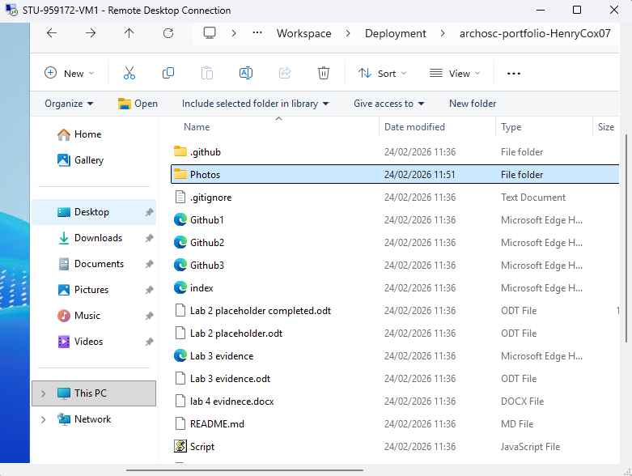
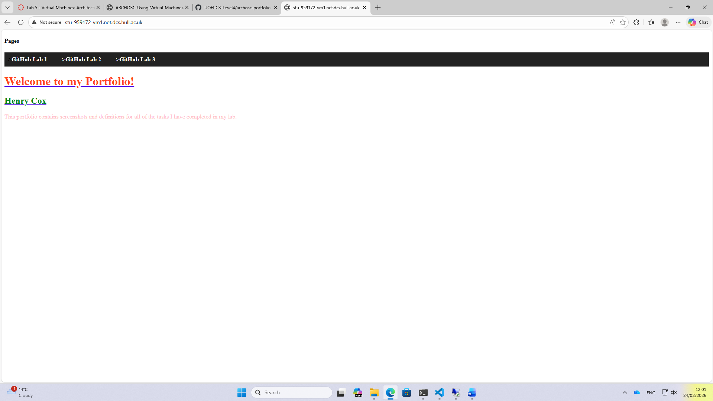
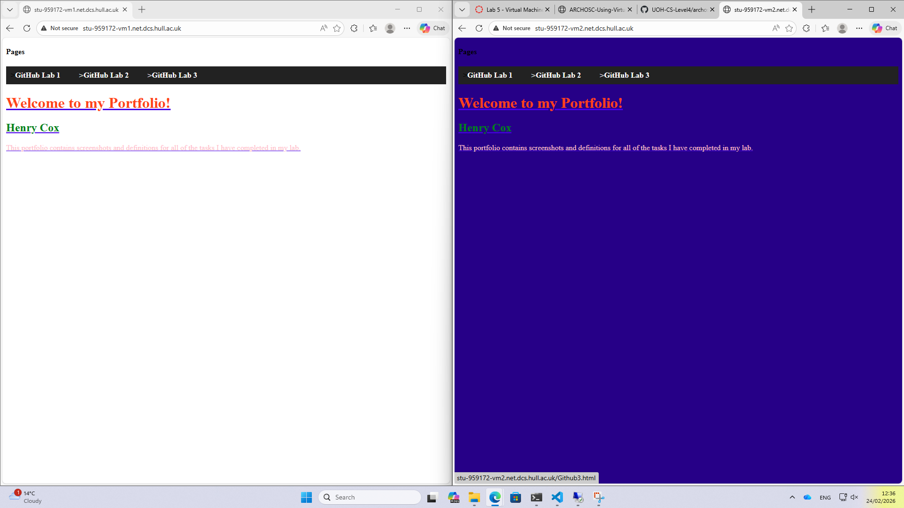

Task 1:
The first task of the lab required me to clone my GitHub repository onto a virtual machine; to complete this task I had to log into the virtual machine, install Git on the virtual machine and then clone the repository contents onto the VM. The way that I cloned the contents of my repo was by using the developer command prompt on the VM; all I needed to do was initialise a repo on the VM and then clone the repo on GitHub into it using the link to the online repo to tell the VM what it is cloning from.

Task 2:
Next, I was tasked with hosting my website from the virtual machine so that I could view it on my local machine. To do this I had to move to the wwwroot folder in my virtual machine's folder explorer and take the files for my website on the VM and paste them into the folder. After moving the website files into the IIS wwwroot folder, I entered the VM's IP address on my machine which allowed me to access the website on the virtual machine.

Task 3 + 4:
Finally, the final 2 tasks required me to create a new VM, put my repo's contents on the new VM and host my website on the second VM as well as on the first VM which involved repeating the same steps from task 1 and 2. Once I hosted the website on the second virtual machine I had to show that I had made a change to the website on my second VM. To do this I had to install VS Code on the second VM, paste the code for my website into VS Code and make some changes to the website. Once I changed the background colour of my website on the second VM, I saved the changes, hosted the website from the second VM and then took this screenshot to show both VMs hosting each website. By showing that each VM had a different website running on them, it shows that each VM could host a website independently from one another.

Reflection:
The content for Lab 5 started to teach me how to use virtual machines which is an essential skill in software development as it will allow me to produce and test any software that I produce without affecting the local machine creating a safety net for any local machines that I use. I learnt how to log into multiple VMs, how to use GitHub and the developer command prompt to grant access to my files on the virtual machine and how to install software onto virtual machines so that I could make changes to my website on each virtual machine.